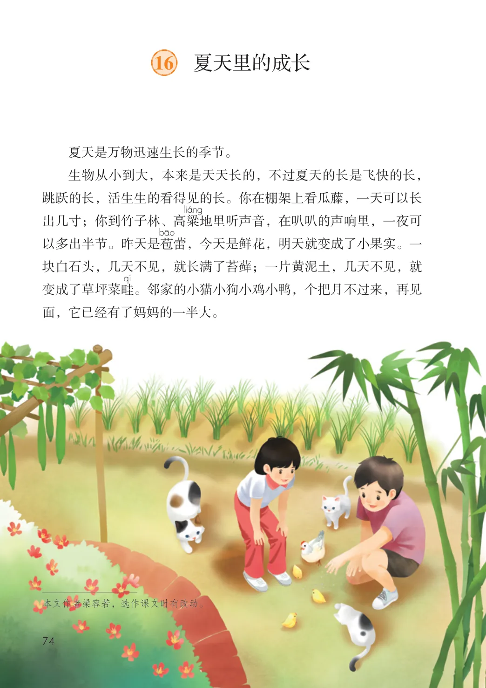
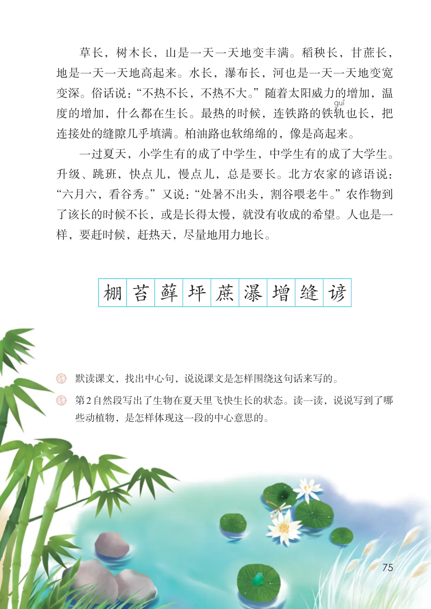

第五单元 · 第 16 课
夏天里的成长
文字内容 PDF 第 79 页
夏天是万物迅速生长的季节。
生物从小到大，本来是天天长的，不过夏天的长是飞快的长，跳跃的长，活生生的看得见的长。你在棚架上看瓜藤，一天可以长出几寸；你到竹子林、高粱地里听声音，在叭叭的声响里，一夜可以多出半节。昨天是苞蕾，今天是鲜花，明天就变成了小果实。一块白石头，几天不见，就长满了苔藓；一片黄泥土，几天不见，就变成了草坪菜畦。邻家的小猫小狗小鸡小鸭，个把月不过来，再见面，它已经有了妈妈的一半大。
文字内容 PDF 第 80 页
草长，树木长，山是一天一天地变丰满。稻秧长，甘蔗长，地是一天一天地高起来。水长，瀑布长，河也是一天一天地变宽变深。俗话说：“不热不长，不热不大。”随着太阳威力的增加，温度的增加，什么都在生长。最热的时候，连铁路的铁轨也长，把连接处的缝隙几乎填满。柏油路也软绵绵的，像是高起来。
一过夏天，小学生有的成了中学生，中学生有的成了大学生。升级、跳班，快点儿，慢点儿，总是要长。北方农家的谚语说：“六月六，看谷秀。”又说：“处暑不出头，割谷喂老牛。”农作物到了该长的时候不长，或是长得太慢，就没有收成的希望。人也是一样，要赶时候，赶热天，尽量地用力地长。
生字与词语
棚
苔
藓
坪
蔗
瀑
增
缝
谚
课后练习
- 默读课文，找出中心句，说说课文是怎样围绕这句话来写的。
- 第2自然段写出了生物在夏天里飞快生长的状态。读一读，说说写到了哪些动植物，是怎样体现这一段的中心意思的。
原版对照
原书页面与全部插图
点击图片可查看大图。

